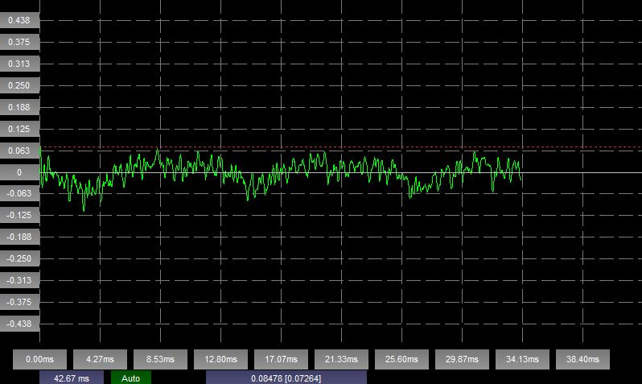
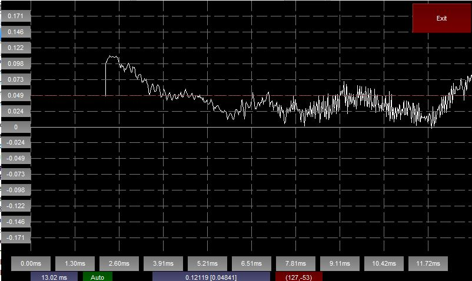
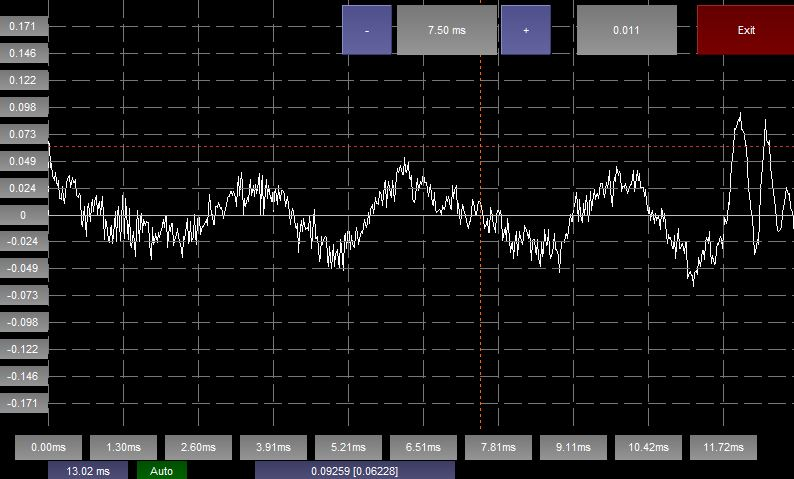
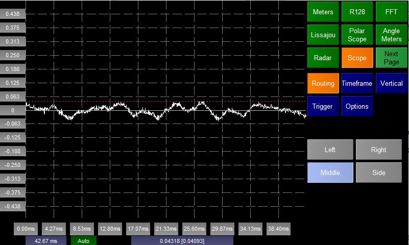
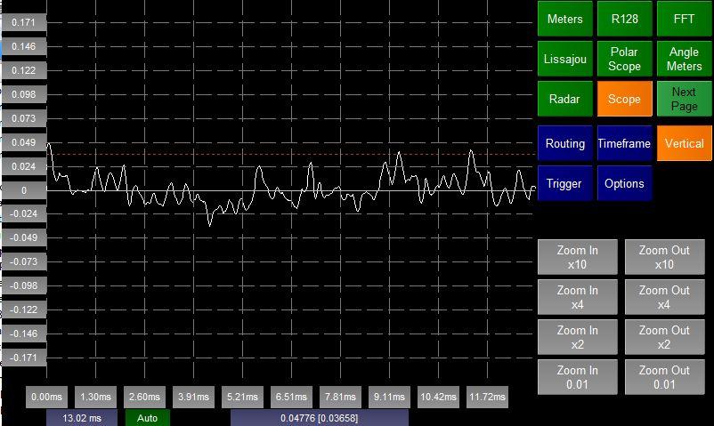
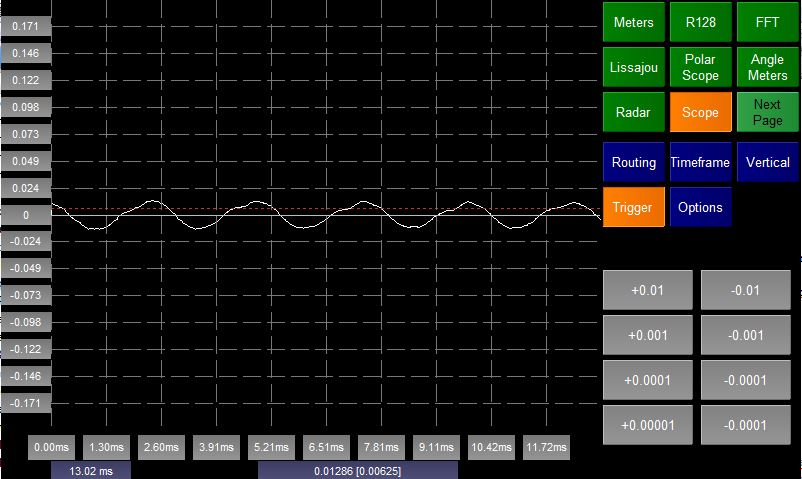
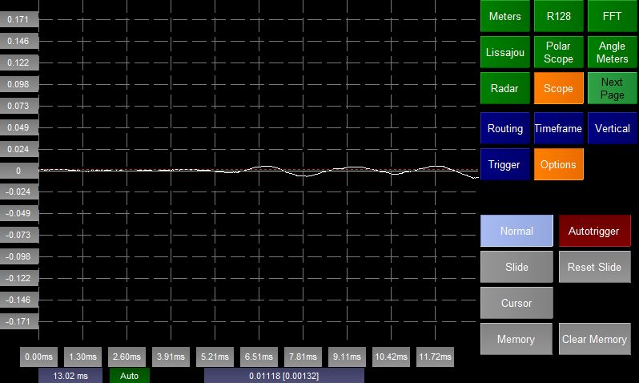
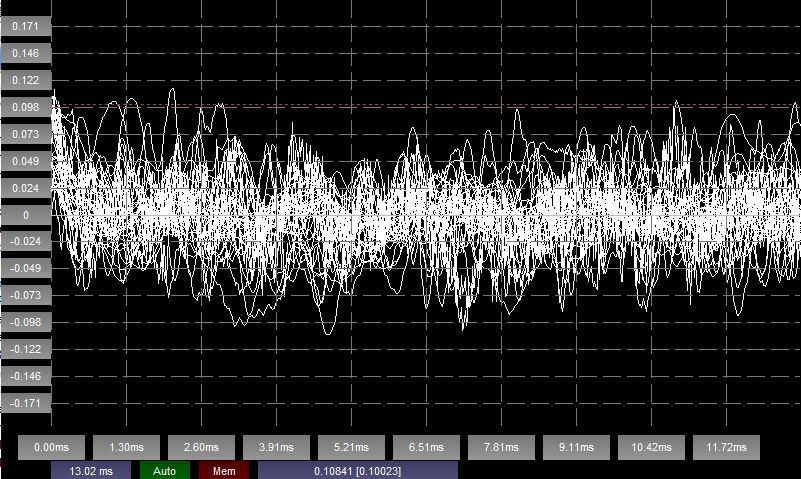

The Scope plugin simulates an Osciloscope. It shows a representation of the waveform of two channels of audio. The y-axis represents the level of the signal and the x-axis time.
The vertical scale of the Scope is from -1.0 to 1.0.
The Scope can operate in three main modes selectable from the Option page:
Normal
Shows the waveform. There is no user interaction
Slide
Shows the waveform. By touching the screen and dragging the user can mode the waveform relative to the axis.

To exit from this mode press the Exit button at the top right of the screen.
Pressing the Reset Slide button in the Options page will reset the position of the waveform.
Cursor
Shows the waveform and a vertical red line. The value of the waveform where it intersects the vertical red line is shown in the right hand label.

The user can move the vertical line by touching the screen or by pressing the - and + buttons. The position of the line, relative to the start of the trace is also shown between these buttons.
Press the Exit button to exit from cursor mode.

The plugin shows the waveform for a single channel of audio. The Routing options page allows you to select which channel you wish to display.
In stereo mode the user is also allowed to select
In stereo mode the waveform changes colour depending on the selected channel:
The Timeframe option page allows the user to change the number of samples that the Scope will display.
The left label at the bottom of the screen shows the current timespan.

The Vertical option page allows the user to change the vertical scale be zooming in or out multiples of the current scale.

In order for the scope to know where to start drawing the waveform a trigger must be set. Once the audio gets higher than this value the scope then draws samples until the end of the timeframe.
The Trigger option page allows the user to change the value of this trigger.
The trigger value is shown on the scope as a dotted red line and also as a value in [] in the right most label.
Note - it is possible to set the Scope to Autotrigger (see below). If this is the case then all the buttons on the Trigger option page will be disabled.
Note - the trigger is always taken from Channel 1 of the scope.

The Options option page allows the user to:
Select the mode the scope is running in (see above).
Decide whether to use a manual trigger or Autotrigger. In Autotrigger mode the first timeframe of samples are analysed and the maximum value is used as the trigger for the rest of the samples in the Scope buffer.
Set the Scope to Memory mode
Memory

Usually the Scope will clear the graph before drawing the waveform. In memory mode this does not happen so waveforms are laid on top of each other.
This makes it easy to look for anomolies in simple waveforms (e.g. distortion in tone etc).
The user can toggle Memory mode by pressing the Memory button in the Options page.
It is also possible to Clear the Memory from the Options page.